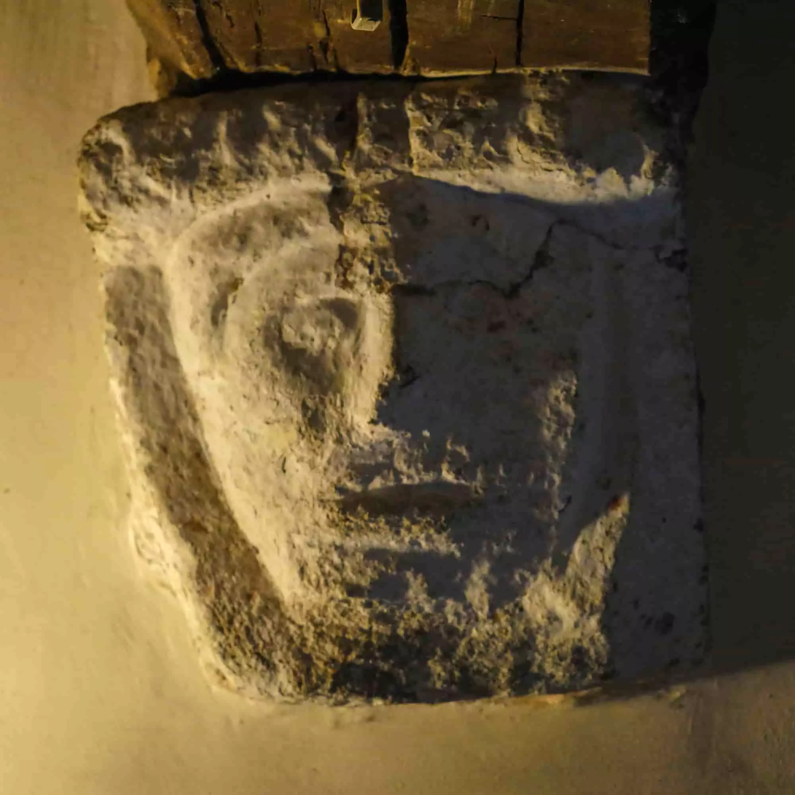

Owain Tudor, a figure of historical intrigue and romance, lived a life marked by unexpected twists and enduring love. Born at Plas Penmynydd, Anglesey, in 1400, Owain started as a simple squire but soon found himself at the heart of English history. Owain's destiny took an astonishing turn when he caught the eye of the formidable widow, Queen Catherine of Valois, after her husband King Henry V's death. Their clandestine romance blossomed into a marriage that scandalized the English court, for Owain was neither noble nor English. Yet, their love endured, and they bore at least four children, linking their lineage to the royal Tudor dynasty. Owain's life journey, from humble beginnings to the inner circles of power and love, adds a captivating chapter to the tapestry of the Tudor legacy, one steeped in passion and resilience.
Numerous theories abound about Owain Tudor's early life. Some speculate that he fought at Agincourt and rose to become an esquire in the service of King Henry V. In 16th-century France, whispers suggested he was the illegitimate son of an alehouse keeper, while 18th-century Welsh tales painted his father as a fugitive murderer. These rumors, however, lack solid foundations and highlight the vast speculation surrounding Owain Tudor's origins. What we do know is that in May 1421, a man named 'Owain Meredith' entered the service of Sir Walter Hungerford, steward of the king's household during the French campaign. Beyond this point, Owain's life becomes veiled in mystery once more.
It was during these enigmatic years that Owain Tudor encountered Queen Catherine, a meeting that has fueled the imagination of romantics, historical fiction authors, and poets for generations. Legend whispers that their connection began with Owain quite literally falling into Catherine's lap during a dance, while another tale insists it was Owain Tudor's prowess in the water that caught the Queen's attention. Regardless of the circumstances, their ensuing relationship would forever alter the course of English monarchy, ushering out the Plantagenet dynasty and ushering in their own Tudor legacy.
Owain became an early casualty of the Wars of the Roses (1455–1487), the conflict between the House of Lancaster and the House of York. In January 1461, he joined his son Jasper's army in Wales, but this force suffered defeat at the Battle of Mortimer's Cross at the hands of Edward of York. Tragically, on the 2nd of February, Owen Tudor was captured and subsequently beheaded in Hereford. His decapitated head was then displayed on the market cross in the town, where, as the story goes, "a distraught woman combed his hair and washed away the blood from his face." Additionally, around him, a circle of 100 candles was arranged, marking the somber event.
A statute did exist barring marriage between a person from Wales and a person from England, however, Catherine, a French princess, was not from England and so such a law held no sway over her destined love.
Just moments before facing his execution, Owain came to the grim realisation that his fate was sealed. He whispered, "That head shall lie on the block that was once accustomed to resting on Queen Katherine's lap."
Ednyfed Fychan, a noble from 12th-century North Wales, led a life defined by remarkable turns of fate. Although not a royal prince, his valorous acts and strategic marriage laid the foundation for the Tudor dynasty's ascent. In a fierce battle against English forces, Ednyfed's unwavering loyalty to his Welsh Princes shone brightly. He beheaded three English lords, presenting their heads as tribute to his Prince. This audacious act earned him the unique distinction of changing his family's coat of arms to display three heads, a vivid testament to his unwavering loyalty and significance.
The Tudor family of North Wales is known for its intricate and fascinating family tree, which ultimately led to the establishment of the Tudor dynasty in England. Here's a more detailed look at their family tree:
This intricate family tree highlights the humble origins of the Tudor family in North Wales, their rise to prominence, and their eventual impact on English history through the reign of Henry VII.
Owain Tudor broke away from the traditional Welsh patronymic system and instead chose the fixed surname of Tudor rather than Owain ap Maredudd ap Tudur ap Goronwy ap Tudur ap Goronwy ap Ednyfed Fychan. It was a prescient choice, for Tudur or Tudor comes from the Brythonic tud (territory) and rhi (king).
St. Gredifael's Church in Penmynydd stands as a poignant symbol of the Tudor dynasty's Anglesey roots. Nestled within its hallowed walls lies the tomb of Gronw Tudur, a significant figure in the Tudor lineage and the great-uncle of Henry VII. The Penmynydd estate was once home to five brothers, one of whom was Gronw, whose effigy adorns the oldest tomb in the church. Another brother, Meredudd, had a son named Owain Tudur, who would go on to join Henry V's army and become a member of the royal court circle.
The 14th century alabaster tomb pays homage to Gronw Fychan and his wife Myfanwy and their link to the Tudor lineage in Anglesey. Its sides are adorned with five shields each, interspersed with canopied niches for statues, evoking a sense of grandeur. Gronw Fychan himself is portrayed robustly, clad in armour with a surcoat, his head encased in chain-mail, and his moustache gracing the top. His feet rest upon a regal lion. Myfanwy, in striking contrast, is adorned with intricate clothing and ornaments. Her head is framed by two angelic wings, and beneath her, two lapdogs find comfort. This tomb stands as an enduring tribute to a rich history, etched in stone and alabaster.
The church itself, as it stands today, harks back to the 1400s, a testament to the family's prominence during that era. However, the land on which it stands has a far older history, dating back to the 6th century when it was consecrated by Gredifael. Gredifael was the son of a Breton migrant, part of a wave of Christians who settled in the area, leaving an enduring legacy that would be intertwined with the future of the Tudor dynasty.
In Cae Gredifael, close to the church, there was a well named Ffynnon Redifael. It was believed that the water from this well had the power to cure warts.
The site's earliest structures were likely wooden, but no remnants of them have been found. However, you can still see the Hall House from Owain Tudur's time in the 1400s in the stonework up to the first 4 feet on the North Front, which has a prominent oak front door. In 1576, Richard Owain Tudur III constructed the main block, similar to its current appearance but with a thatched roof. Around 1700, the East kitchen wing was added, and in 1800, the West wing with the dining room and a new staircase was built.
The oldest part of the current building, the North block, dates back to 1576. It was constructed in a style popular among the gentry of the late 16th century. This section had four ground floor sections. On one side of the cross passage, there was a partition separating it from the parlor to the west, while the other side opened into the hall. The partition on the east side may have been added later to create smaller rooms within the originally large hall. It consists of plain rails with roughly beveled panels. The fireplace, positioned on the wall opposite the main entrance, would have left a lasting impression on visitors. There's a 16th-century stone corbel featuring a carved human head still in place, providing support for the central hall beam. Another similar corbel may exist to the left of the main doorway, but it's currently hidden behind a reconstructed partition.
During the 1660s, it's possible that the building experienced some form of deterioration, which could have been caused by a fire. At this time, it's likely that the partition on the west side of the hall was reconstructed, and an annex for the kitchen was added to the east wing. In another round of changes, it's likely that alterations took place, possibly following the change in ownership due to Francis Bulkeley's suicide in 1722. During this phase, it's probable that the partition on the east side of the hall was introduced. Additionally, the roof's pitch might have been modified to create more space in the loft area. This adjustment likely coincided with the replacement of thatch roofing with slate.
The last significant round of modifications occurred in the 19th century, with the aim of removing the medieval character from the building. During this phase, date stones, inscriptions, and heraldic elements were relocated, and the original staircase was dismantled.
Stone corbel of a human head that supports the central beam. These enigmatic stone heads might have served as symbolic guardians, their unceasing watchfulness deterring intruders—a reflection of the supernatural beliefs prevailing during the house's construction.
Richard Cuthbertson, a passionate and skilled restoration expert, embarked on an extraordinary journey to breathe life back into a forgotten gem of history: a 16th-century house that once cradled the birth of Owain Tudor. With unwavering determination and an ardent respect for heritage, Richard meticulously pieced together the past, working tirelessly to recreate the ambiance of a bygone era. Each creaking floorboard and intricately carved beam became a canvas for his craftsmanship. Richard's labor of love wasn't merely about architectural revival; it was a homage to a significant chapter in history. As the house slowly unveiled its secrets, it seemed to whisper tales of Tudor dynasty origins, and Richard, the modern-day steward, listened intently. Through his dedication, Owain Tudor's birthplace regained its former glory, inviting visitors to step back in time and connect with the rich tapestry of the past.
Plas Penmynydd's exterior is adorned with a captivating array of date stones and inscriptions. These markers not only signify pivotal moments in the estate's history but also provide a tangible link to its past. The date stone commemorating the construction of the main block in 1576 is a prime example, etching a moment of architectural transformation during the late 16th century into the very fabric of the house.
The heraldic elements on the north façade of the house immediately offer insights into the lineage and social status of its residents. Particularly noteworthy is the Tudor family's coat of arms, prominently displayed at Plas Penmynydd. To the left of the grand front door stands a Saracen's head, likely representing Ednyfed Fychan's legacy and family arms before he earned the emblem we recognize today. This unique emblem, located to the right of the door, commemorates his daring act of presenting three English lords' severed heads to his Prince, marking a significant turning point in his family's history.
Embedded within the eastern wall of the 17th-century kitchen extension at the rear (south) of the house are two engraved stones. One bears the inscription "PERACTVM EST OPVS LAVS DEO" (God's work is completed), while the other carries the message "VIVE UT VIVAS" (Live in order to truly live).
Plas Penmynydd is unique in just how many carved inscriptions it has, these are some of the earliest dated inscriptions found on houses in Wales.